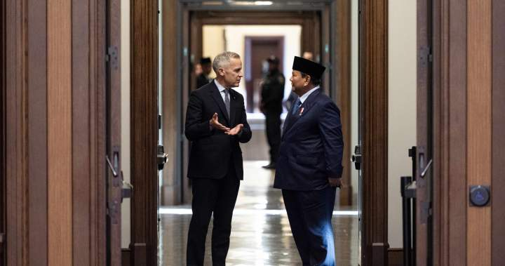

世界苦茶09月25日新闻 | 38条 | 中国未来谈判中不再寻求WTO特殊待遇

中国未来谈判中不再寻求WTO特殊待遇 | 商飞C919交付目标下滑2/3 | 印尼与加拿大签订自贸协议 | 美国财政部支持阿根廷 | 白宮改革H1-B簽證
每日三个新闻解读
苦茶数据
美元兑人民币：7.13（昨日7.11，前日7.11）
美元兑日元：148.78（昨日147.387，前日148.36）
上证指数：3858（昨日3826，前日3821）
标普500指数：6637（昨日6656，前日6693）
比特币：111691（昨日112081，前日112984）
布伦特原油：69.14（昨日67.76，前日67.21）
中国新闻
• 贵州花江峡谷大桥将通车 ：世界第一高桥花江峡谷大桥将于9月28日在中国贵州省通车。据央视新闻报道，贵州省政府新闻办星期三举行发布会。花江峡谷大桥是贵州六枝至安龙高速公路的关键控制性工程，全长2890米，主桥跨径1420米，桥面到水面高度625米，主桥跨径居山区桥梁跨径世界第一、桥梁高度居世界第一，被称为“横竖”都是世界第一。
• 绍兴地铁二号线事故三死一伤 ：中国媒体获悉，浙江绍兴地铁二号线深夜运行时撞上保洁员致三死一伤，有关部门证实事故发生，并称浙江省已对此提级调查。《济南日报》旗下新媒体新黄河报道，浙江省绍兴市轨道交通二号线9月13日晚发生重大事故。多名知情人士透露，事发后浙江省交通运输厅在全省交通管理系统内部分发传达的文件显示，事故发生在9月13日晚间11时30分许，致三人死亡一人受伤。二号线的末班车时间是晚10时30分和10时32分。这意味着事故发生时间，是在末班车结束后的非运营时间。
• 能源局整治光伏内卷困境 ：中国国家能源局承诺将整治光伏产业“内卷式”竞争和产能过剩。该行业目前正面临持续低迷的困境。中共中央党校机关报《学习时报》星期三刊登中国国家能源局局长王宏志文章指出，有序推动新能源全面参与电力市场是新能源高质量发展的必然选择。王宏志说，在电力市场建设完善过程中，受新能源出力随机性、波动性、间歇性影响，其在电力中长期市场、电力现货市场中议价能力较弱，承担更多价格波动和收益风险，部分企业出现“增发不增收”“增收不增利”的困境。下游电价收益等风险又可能进一步导致上游光伏产业链“内卷式”竞争和组件价格下跌等问题阶段性加剧。
• 于朦胧坠楼舆论平台严管 ：中国演员于朦胧坠楼身亡后，在中文舆论圈引发各种揣测。中国最大的社交媒体平台之一微博发文称，已清理违规内容10万余条，对1000余个账号予以禁言或关闭，以及对1万5000余个违规账号暂停评论功能。微博社区管理官方微博“微博管理员”星期二晚发文，近日警方就于朦胧酒后意外坠楼身故一事发布警情通报，对编造坠楼谣言的相关人员依法采取强制措施。但发现在通报发布后，有部分用户持续在评论区恶意炒作，发布消费逝者甚至攻击当事人及政府账号的违规言论，挑动网络戾气和极端情绪。“这不仅是对逝者及其家属的不尊重，而且严重扰乱了公共秩序。”微博管理员称，截至目前，依据《微博社区公约》等相关规定，已针对恶意挑动负面情绪等违规行为共清理违规内容10万余条，对1000余个违规账号予以阶段性禁言直至关闭账号处置，并对1万5000余个多次在评论区进行恶意炒作的违规账号暂停评论功能。
• 外卖平台规范意见稿公开征求 ：中国市场监管总局组织起草的外卖规定，星期三起正式面向社会公开征求意见，规定聚焦平台收费、促销行为，遏制“裹挟式”竞争、“幽灵外卖”等现象。据央视新闻，中国市场监管总局组织起草的《外卖平台服务管理基本要求(征求意见稿)》，主要聚焦平台收费、促销行为等重点问题，帮助外卖平台企业规范服务管理、提升服务质量，减轻商户经营负担，引导平台企业公开有序竞争。报道称，今年以来，外卖平台围绕抢夺用户流量、夯实配送能力开展“补贴大战”，很多商户被迫卷入其中，甚至出现转嫁补贴成本，挤压商户合理利润空间等现象。为此，征求意见稿重点规范了平台和商户价格促销行为，以遏制“裹挟式”竞争、过度“价格战”等乱象。
• 国台办批新版防卫手册贩卖焦虑 ：对于台湾新版全民防卫手册，中国大陆国台办称，手册的目的是贩卖战争焦虑、恐吓裹挟民众。大陆国台办星期三举行例行新闻发布会，发言人陈斌华说，民进党当局顽固坚持“台独”分裂立场，妄图“以武谋独”“倚外谋独”，不断升高两岸对立对抗，严重破坏台海和平稳定。其费尽心机炮制、推出这本小册子，目的就是要贩卖战争焦虑、恐吓裹挟台湾民众，手段卑鄙，居心险恶。陈斌华说：“我们珍爱和平，但决不容忍‘台独’分裂。希望广大台湾同胞从民族大义和自身安全福祉出发，坚决反对‘台独引战’，同我们一道维护台海和平稳定，守护好两岸同胞共同家园。”
• 网红张雪峰多个社交媒体账号被禁止关注： 9月24日，@张雪峰老师 账号在微博、小红书、抖音和 B站平台均被禁止关注。但在抖音平台上如“张雪峰讲升学规划”、“张雪峰聊考研”、“张雪峰说考研”等账号目前依然可以关注，且多个账号正在直播。其中微博平台理由为：该用户因违反法律法规或《微博社区公约》被禁止关注！同日，张雪峰告诉记者，“禁止关注是账号问题” ，随后便挂断了电话。9月3日，张雪峰在组织员工观看九三阅兵后宣布，若祖国统一战争枪声打响，我个人至少捐5000万，公司整体捐1个亿。
亚太印太新闻
• 泰国新内阁宣誓就职 ：泰国新任首相阿努廷及其内阁星期三宣誓就职，成为泰国两年来的第三届政府，并准备四个月后面对全国大选。阿努廷和35名部长星期三在曼谷王宫向泰王哇集拉隆功宣誓。阿努廷当晚将召开首次内阁会议，并可能将批准部分官员的任命，然后下周向国会提交施政纲领。此次宣誓典礼意味着数周来的政府组建过程圆满结束。此前，前首相佩通坦与柬埔寨参议院主席洪森的通话录音外泄，泰国宪法法院8月29日裁定她与洪森的对话严重违反道德规范而将她解职。
• 美拟与东南亚敲定贸易协议 ：美国贸易代表贾米森·格里尔说，华盛顿预计将在几周内与一些东南亚国家敲定贸易协议。格里尔星期三在吉隆坡举行的亚细安经济部长会议间隙说：“特朗普总统和我本人对我们围绕这些协议共同开展的工作感到自豪，预计将在未来数月甚至是数周内敲定部分协议。”这是自8月所谓对等关税实施以来，亚细安与美国首次举行高级别会议。
• 韩前总统夫人金建希受审 ：韩国首尔中央地方法院正式开庭审理韩国前总统尹锡悦的妻子金建希相关案件，金建希以被告身份出庭。首尔中央地方法院于星期三14时10分开始进行金建希所涉案件的首场庭审。法院方面当天限时允许媒体机构在庭审现场拍摄照片和视频并对外公布。金建希进入法庭时身着黑色正装，佩戴黑框眼镜，面戴口罩，左胸挂有号码牌。当天庭审持续40分钟。新华社报道，8月29日，负责侦办相关案件的“金建希特检组”以涉嫌违反《资本市场法》《政治资金法》《特定犯罪加重处罚法》为由，对金建希提起公诉。
• 国民党主席选举将办政见会 ：国民党主席选举将于10月5日办电视政见会，并举办至少六场分区政见说明会。据联合新闻网报道，台湾国民党中央党部星期三邀六位党主席候选人阵营协调举办政见说明会相关事宜。组发会主委许宇甄说，经协调，中央党部将于10月5日主办一场电视政见说明会，并举办至少六场全台湾分区政见说明会。
• 花莲堰塞湖溢流致17死逾百失踪 ：台湾花莲县一堰塞湖在超强台风侵袭之际溢流，造成花莲17人死亡，百余人失踪。台湾行政院长卓荣泰星期三前往勘灾，称此次彻底的撤离行动工作显然是有瑕疵的。在地的国民党立法院党团总召傅崐萁反击称，这不是天灾，而是人祸，痛骂行政院没有人性，只会卸责。傅崐萁也要求桌荣泰说清楚，堰塞湖是应该台湾中央政府负责。综合中天新闻网和联合报报道，卓荣泰星期三上午前往花莲县勘灾，民进党立委陈莹、沈伯洋、国民党立委傅崐萁、郑天财都到场了解。
• 台湾反制南非降等措施限出口 ：针对南非此前将台湾在当地两个办事处降等、更名，台湾提出反制措施，公告出口南非的晶片等47项货品，应先经核准才能出口。这一罕见举措显示台湾利用市场主导地位，向与中国大陆关系密切的国家施压。据《自由时报》报道，南非政府去年10月起要求台湾驻处迁馆，上月更片面公告将台湾两驻处更名及降等。台湾经济部指出，因南非政府屡次不顾台湾呼吁，且配合大陆对台施压、更名、降级及缓发签证等，已对台湾的“国家”安全及公共安全的保障构成危害。台湾经济部说，因已对台湾经济贸易正常发展有不利影响，公告“二极体晶粒及晶圆，光敏二极体或发光二极体除外”等47项货品，输往南非应事先经过经济部核准，且在“前揭危害消失前，暂停核发许可”。
科技新闻
• 谷歌揭中国黑客渗透美企 ：谷歌称，疑似中国黑客正在对美国科技企业和律师事务所实施网络间谍活动，经常在不知不觉中窃取国家安全机密。据彭博社报道，谷歌云麦迪安咨询部门首席技术官卡马克尔表示，就事件发生的频率、严重性和复杂程度而言，这个在谷歌的追踪代号为UNC5221的黑客组织是“过去几年美国最猖獗的对手”。攻击者被描述为技术极其先进且隐秘。研究人员表示，他们在受害者网络中不被发现的潜伏时间平均超过一年，同时也在窃取有关美国国家安全和国际贸易的情报。该组织还以欧洲重点产业为目标。
• 美国发射三探测器监测太阳风暴 ：美国周三发射三颗航天器，旨在加强对太阳风暴等太空天气的预警。太阳风暴是太阳突发释放大量带电粒子和能量，冲向太空并扰动地球磁场与电离层，或引发卫星、通信、导航和电网故障。法新社报道，三颗探测器由私人航天公司SpaceX制造的猎鹰9号火箭从佛罗里达肯尼迪航天中心升空。入轨后，这些探测器将开启漫长航程，前往拉格朗日点L1，一个位于太阳与地球连线之间、距太阳约150万公里的稳定观测点，适合长期监测来自太阳的活动。
• Instagram月活用户突破30亿 ：Instagram现在拥有30亿月活跃用户，Meta首席执行官马克·扎克伯格周三表示。“我们在这里建立了一个多么不可思议的社区，”扎克伯格在他的Instagram频道上发文称。这一数字对于这款照片分享应用而言是一个重要里程碑，该应用由这家社交媒体公司于2012年以10亿美元收购。Meta上次披露Instagram用户数据是在2022年10月，当时扎克伯格在财报电话会议中表示该应用月活用户已突破20亿。扎克伯格于一月表示脸书应用月活用户超过30亿。四月，扎克伯格曾向分析师表示WhatsApp的“月活用户超过30亿”。
• 人工智能聊天机器人带来“AI精神病”隐忧： 英国伦敦国王学院汉密尔顿·莫林团队发表的一项研究指出，像ChatGPT这样的AI聊天机器人可能会诱发或加剧精神病，他们将这一现象称为“AI精神病”。研究认为，AI在对话中倾向于奉承和迎合用户，这种回应方式可能强化用户的妄想思维，模糊现实与虚构之间的界限，从而加剧心理健康问题。团队发现用户与AI对话时会形成一种反馈循环：AI 会不断强化用户表达的偏执或妄想，而被加强的信念又进一步影响AI的回应。研究人员分析了2023年5月至2024年8月期间公开的9.6万条ChatGPT对话记录，发现其中有数十例用户呈现明显妄想倾向，例如通过长时间对话验证伪科学理论或神秘信仰等。
财经新闻
• 中国在未来谈判中将不再寻求WTO特殊待遇： 中国周二表示，在当前和未来的世界贸易组织谈判中，将不再寻求新的发展中国家特殊待遇，此举可能是中国在一场计划召开的峰会前试图缓和与美国长期分歧的信号。中国总理李强在纽约出席联合国大会期间，在一场中国主办的全球发展倡议的会议上宣布了这一转变性举措。此举获得WTO总干事伊韦阿拉的赞扬，她称：“这是多年艰苦努力的成果”，并对中国的领导力表示赞赏。不过李强在表述中仍强调中国是“一个负责任的发展中大国”，凸显出北京方面依然主张其发展中国家地位，这一立场长期以来令华盛顿不满。
• 美国下调欧盟汽车关税 ：美国下调欧盟进口汽车关税至15%，追溯自8月1日起生效，巩固了双方今夏达成的框架性贸易协议条款。商务部和贸易代表办公室星期三在网上公布文件，详细说明调整内容，涉及降低多类商品的关税，美国对欧盟汽车的关税将从现行的27.5%降至15%。大众汽车、保时捷、奔驰股价在消息公布后上涨。保时捷在美国仅销售进口车，是此前受美国关税打击最严重的企业之一，该股在法兰克福市场一度上涨3.8%。
• 民调显示美民众忧经济形势 ：一项新民调显示，超过半数受访美国民众对美国经济形势以及共和党平抑物价的能力“感到担忧”。新华社报道，这项线上调查由路透社与民调机构益普索集团在全美范围内于本月19日至21日进行，共1019人参与。根据民意调查结果，认为美国经济“正走在错误轨道上”的受访者约占54％，高于8月份的53％和7月份的52％。同时，仅35％受访者认可美国总统特朗普的经济措施，仅28％受访者认可其在降低生活成本方面的表现，这两个数字均低于之前的民调结果。
• 美国财政部对阿根廷的支持，短期提振比索与米莱的声望： 美国财政部长斯科特·贝森特承诺采取“强有力的大规模行动”，动用一个已有91年历史的美国危机基金，以稳定阿根廷动摇的货币，这或许能让比索在短期内重新站稳脚跟。贝森特宣布，财政部将动用偶尔使用的2195亿美元外汇稳定基金为阿根廷提供后盾，使比索及其他阿根廷资产在上周大幅下跌后迅速飙升。不过，他表示，任何美国干预的决定将在他与总统唐纳德·特朗普于周二在纽约会见阿根廷总统米莱后作出。“大规模的美国支持将在短期内同时提升比索与政府在中期选举中的地位，”前国际货币基金组织战略主管、现任大西洋理事会高级研究员马丁·穆勒海森表示。 （翻評：這種的就是美國真正的盟友，真金白銀支持的）
• 加拿大与印尼签署“改变格局”的贸易协定及新的防务协议： 印尼总统普拉博沃·苏比安托与加拿大总理马克·卡尼在渥太华国会山签署了新的贸易与防务合作协议。该贸易协议是全面性的，意味着它将为与全球第四大人口国的多行业贸易开辟渠道。卡尼称这项协议是“改变格局的”，它是加拿大首次与东南亚国家联盟成员国签署的双边贸易协定。他在渥太华对记者表示：“一旦全面实施，加拿大目前对印尼出口产品的95%以上关税将被降低或取消。所有出口都将享有优惠税率，使我们的出口明显更具竞争力。”总理还宣布了一项新的防务合作协议，将“深化双方在海上安全、网络防御、维和及军事教育方面的合作。”他补充道：“这是加拿大印太战略中的关键部分，同时也向世界发出了明确信号，即加拿大和印尼承诺携手合作，维护该地区及更广范围的和平与稳定。” （翻評：印尼和加拿大簽署防務合作協議，肯定不是中國希望的。）
• 美国9月商业活动放缓 ：美国9月商业活动扩张速度为三个月来最慢，而需求降温限制了企业提高价格和抵消关税的能力。星期二公布的数据显示，标普全球9月综合产出指数初值下降一个点，至53.6。结果高于50意味着扩张。尽管材料支付价格指标升至四个月高点，但接收价格指标回落至4月份以来最低。服务业投入价格升至5月份以来最高。
• 商飞C919交付目标大幅下调 ：彭博社引述知情人士说，中国本土飞机制造商中国商飞已将旗舰机型C919的交付目标，削减了三分之二。知情人士称，中国商飞计划今年交付约25架单通道客机，低于之前预期的75架。如此大的调整凸显了中国商飞制造愿景遭遇的挫折。知情人士说，这家中国飞机制造商的供应链几乎所有关键环节都出现了瓶颈，阻碍了稳定生产飞机的能力。
• 韩国消费者信心指数回落 ：受美国关税担忧以及建筑业持续疲软影响，韩国消费者信心自3月以来首次下降。彭博社引述韩国央行星期三发布的报告说，9月综合消费者信心指数下跌1.3，至110.1，为6月以来的最低水平。基于调查的指数仍远高于100的中性水平，表明家庭仍然普遍乐观。此次回落之前，指数已连续五个月上涨，在8月触及自2018年1月以来的最高水平。由于半导体和汽车销售强劲，韩国出口今年仍保持韧性，但美国对韩国商品征收15%的新关税以及贸易谈判的不确定性，可能会削弱增长势头。
• G7考虑设定稀土价格下限，欲抗衡中国主导地位 ：四位知情人士对路透表示，七国集团(G7)和欧盟正在考虑通过设定价格下限来促进稀土生产，以及针对中国的部分出口产品征税，以激励投资。其中一位消息人士在谈到本月早些时候的芝加哥会议时称，讨论的核心在于是否要提高对关键材料外国投资的监管门槛，以避免企业转向中国。该人士补充称，是否要直接与北京对抗仍存在不确定性。
• 美政府对进口机器人、工业机械、医疗设备启动232调查： 美国商务部工业和安全局官网周三发布了两则联邦公报，宣布已于9月2日启动了对进口机器人和工业机械以及对进口医疗设备等的 232 调查。根据联邦公报公告，美国商务部正依据《贸易扩展法》第 232 条款展开上述调查。调查于9月2日启动。该法律授权总统对被认定危及国家安全的商品加征关税，商务部需在 270 天内提交政策建议。在进口机器人和工业机械方面，最新调查要求企业详细说明对机器人及工业机械的预期需求，评估美国“国内机器人及工业机械及其零部件的生产能力能否满足国内需求”，并阐明外国供应链在满足美国需求中的作用。
俄乌战争
• 欧盟研拟对俄油征关税 ：欧盟委员会星期三称，正研究对流入欧盟的俄罗斯石油可能实施关税。法新社报道，美国总统特朗普曾表明，只有欧洲先停止进口俄罗斯能源，他才会支持对俄实施惩罚性制裁。自莫斯科在2022年入侵乌克兰以来，欧盟已将自俄石油进口削减约90%，并公布计划在2027年底前逐步停止剩余采购。但匈牙利和斯洛伐克仍通过管道进口俄罗斯石油，并反对加快切断供应。
• 俄驳美称经济能满足军需 ：克里姆林宫星期三回应美国总统特朗普说法，强调俄罗斯经济能够完全满足军队需要，并警告称，认为乌克兰能够收复失地是一种“严重误判”。路透社报道，特朗普星期二在讲话中称，俄罗斯经济面临重大困难，且莫斯科部队已“无目的地作战三年半”。对此，克里姆林宫发言人佩斯科夫驳斥称，这场战争不是突然发生的，而是源于美国与欧盟对俄罗斯安全关切的不予理会。佩斯科夫指出，正是这种安全关切未被听取，导致了当前冲突的发生。
• 德国外长促欧增援乌克兰 ：美国总统特朗普公开支持乌克兰收复全部领土后，德国外长瓦德富尔周三敦促欧洲“成熟起来”，并承担更多对乌克兰的军事与财政支持。路透社报道，瓦德富尔星期三接受德国媒体采访时指出，特朗普的最新表态反映出他在劝说俄罗斯总统普京结束战争方面的努力已未见成效。他认为，这一变化将把更多责任和压力转移到欧洲一侧，要求欧盟和北约成员国加快行动以填补可能出现的真空。特朗普在社交媒体Truth Social上的言论，被外界视为其措辞上的一次重大转向。此前他曾敦促乌克兰为换取和平放弃部分领土，且上月还在阿拉斯加对普京表示友好。
• 泽连斯基称特朗普通或影响习近平 ：乌克兰总统泽连斯基星期二称，他相信美国总统特朗普可能有助于改变中国国家主席习近平对俄罗斯在乌克兰战争的立场。据路透社报道，泽连斯基在纽约联合国大会期间与特朗普会面后向福克斯新闻节目《特别报道》说：“我认为特朗普总统可以改变习近平对这场战争的态度……我们不觉得中国想结束这场战争。”美国指中国和印度持续从莫斯科购买石油，而成为俄乌战争的推手。
国际新闻
• 伊朗总统重申不谋核武 ：在国际社会或于数天内就伊朗核计划恢复制裁之际，伊朗总统佩泽希齐扬在联合国大会上承诺，德黑兰无意发展核武器。路透社报道，佩泽希齐扬星期三在联合国大会上说：“我再次在此向大会声明，伊朗从未寻求，也决不会寻求制造核弹。我们不追求核武器。”
• 哈梅内伊称与美谈判是死胡同 ：伊朗最高领袖哈梅内伊指出，与美国进行谈判不符合伊朗的利益，最终只会走入“死胡同”。在星期二的一段录音讲话中，哈梅内伊还说，伊朗不会在铀浓缩问题上“屈服于压力”，并重申了伊朗长期以来的官方立场，即伊朗不需要核武器，也无意制造核武器。关于美方声称将进行谈判，中国新闻社引述卡塔尔半岛新闻网和阿拉比亚新闻网的报道说，哈梅内伊说“美国已经提前宣布了会谈结果”，并称“结果是停止核活动和浓缩活动。这不是谈判，而是命令，是强加于人。”
• 美ICE拘留中心爆枪击 ：美国国土安全部部长诺姆说，得克萨斯州州达拉斯一处美国移民与海关执法局拘留设施发生枪击事件，多人受伤。法新社报道，诺姆星期三在社交平台X上发文称：“细节仍在调查中，但我们可以确认有多人受伤并且出现死亡情况。”他补充说：“枪手已自戕身亡。虽然尚不清楚作案动机，但我们知道ICE执法人员正面临前所未有的暴力袭击，这必须停止。”
• 以军推进加沙市区局势恶化 ：以色列装甲部队星期三向加沙市核心区域推进，令滞留在城内、期待外交压力能带来停火的平民处境愈发危急。综合媒体报道，尽管国际社会在联合国就停火与承认巴勒斯坦建国展开斡旋与讨论，但地面局势仍未见缓和，当地的人道与医疗体系正面临严重崩溃风险。以色列军方自8月起持续向加沙施压。本周，以军再度深入加沙居民区并逼近多处医院。面对当局要求居民向南撤离的呼吁，许多加沙人因担心南部也不安全且普遍缺粮而犹豫不决，一些人甚至选择留下。
• 加拿大外长拟访中印改善关系 ：加拿大外交部长阿南德将在未来几周访问中国和印度，加拿大希望改善与两个亚洲主要经济体的紧张关系。阿南德在纽约联合国大会期间接受采访时说道，加拿大必须“确保与印太地区的重要经济大国维持双边关系，我们将与这些伙伴开展的工作，是为了确保加拿大的利益放在首位”。彭博社引述阿南德说，她将与这些国家的对口官员会面，讨论如何开展合作。近年来双边关系受到困扰，这包括与中国的关税之争，以及对印度跨国镇压和暴力的指控。
• 西班牙正式对以色列武器禁运 ：西班牙政府批准一项法令，从法律层面正式确认对以色列实施全面武器禁运，同时禁止通过西班牙港口或领空运输可能用于以色列军事用途的燃料。西班牙经济、贸易和企业部长奎尔波在新闻发布会上说，西政府已经批准对以色列实施“全面武器禁运”，包括禁止与以色列进出口国防相关产品和技术，以及禁止进口来自以色列在巴勒斯坦被占领土非法定居点生产的商品。新华社报道，根据西班牙宪法，政府在紧急情况下可以颁布法令并立即生效，但法令须在30天内经议会通过才能继续有效。
• 白宫拟改革H-1B签证抽签 高薪高技能优先： 当地时间23日，美国国土安全部在《联邦公报》发布公告称，特朗普政府计划调整H-1B签证申请流程，拟引入加权选择机制，在年度配额抽签中优先考虑技能水平更高、薪资待遇更优的申请人。该规则将于本月24日正式公布。根据公告，此举将使工资水平较高的H-1B申请人更有可能中签，从而提高雇主为高技能岗位引进外籍人才的机会。公告强调H-1B签证存在数量限制及豁免条款，但在高需求背景下，政府有权通过改进流程提升效率。按照现行规定，H-1B 每年限额8.5万张，经抽签颁发。该公告称，此举旨在更好地保护美国人免遭外国工人的不公平竞争。